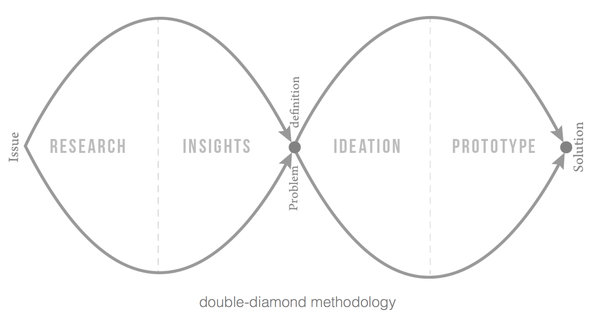

Overview
The theme of this Global Entrepeneurship Summit weekend Hackathon was issues and problems facing women. The first day we brainstormed all sorts of issues including access to Healthcare and Childcare, education, maintaing safety in foreign environments as well as helping children that are abandoned at birth. However, the issue that kept coming up again and again was the scourge of domestic abuse.
Team: Our team was six people. Other people had specialities in business development and project management. I was the only designer/ developer.
Methodology: We used the double-diamond methodolgy, which starts with deep research, which then leads to insights. From there we established the problem definition, brainstormed possible solutions for solving the problem, and from there focused on core user needs and built a prototype that could best address these needs.
Research
Along with learning about heartbreaking statistics online, we had phone interviews with victims, a case manager and shelters host, and tried to understand the perspectives of all people including the perpetrator and the police.